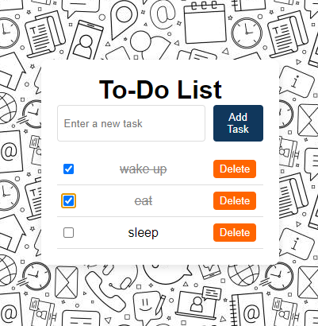

My Projects

Project 1
This is a simple calculator website that i di asa part of my codsoft internship. It helped to strengthen my basics in HTML, CSS, Java Script.

Project 2
This simple to-do list that i did as part of my apex planet internship. It has the basic features of a todo-list like adding a task, marking a task as completed and deleting a task. It also has local storage to keep you tasks data saved.